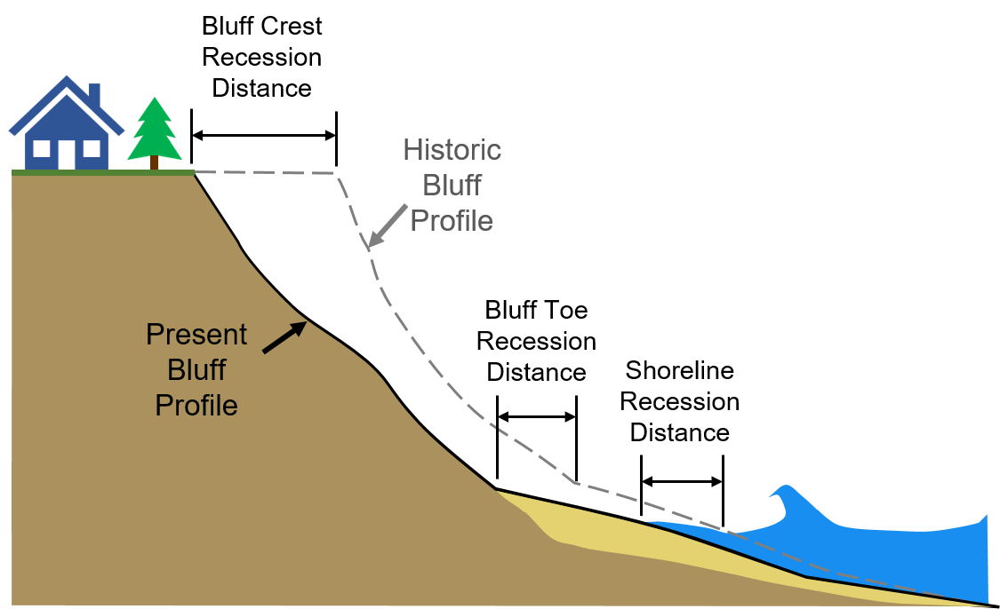

These inventories are from the research of David Mickelson, Senior Scientist and Emeritus Professor at the University of Wisconsin.
The Shoreline Inventory in the Great Lakes Coastal Oblique Photo Viewer are part of Dave Mickelson's research. The shoreline features in this file represent qaulitative 1976 backshore (bluff or low bank) conditions on Lake Michigan from Sturgeon Bay Canal south to the Illinois state line. Beach condition classifications used in the mapping were tested and modified several times before final mapping was begun.
Initial results were reported to the Wisconsin Coastal Management's Coastal Hazards Committee, and their feedback and the initial testing led to the following beach and bluff classifications. All of the shoreline for each date (1976 and 2007) had three components of classification: beach description, backshore description, and structure type.
Shore parallel structures that are onshore were mapped under beach description because they had length along the shoreline being segmented. Groins, jetties, and offshore breakwaters were mapped under structure type as points because most had no significant longshore dimension, or in the case of offshore breakwaters, no line to map on. Some were mapped as points and also as having extent along the shore.
In 1976 black-and-white oblique air photos were taken by Wisconsin DNR as part of a major shoreline erosion project. They covered the Lake Michigan shoreline from Sturgeon Bay Canal south to the Illinois state line. They also covered the Wisconsin part of Lake Superior shoreline.
In spring 2007 oblique digital photos were taken along the Lake Michigan shoreline from Sturgeon Bay Canal to the Illinois state line. Conditions along the shoreline were mapped in a GIS by David Mickelson between September, 2008 and February, 2009 using the 1976 and 2007 photos.
The 1976 photographs were geo-located by identifying features that could be seen in the oblique views and Microsoft Virtual Earth and if necessary the 2007 oblique photos. The 2007 photographs were geolocated using software called GPS -- Photo Link (Geospatial Experts).
US Army Corps of Engineer oblique photos collected in 2012 as part of FEMA’s Great Lakes Coastal Flood Study program. Photos gathered from their 2011-2012 Oblique Imagery Viewer.
These photos are courtesy of David Mickelson
These photos are the result of a WCMP-funded Civil Air Patrol mission
Bluff profiles, graphs, and images courtesy David Mickelson
Coastal Recession Information
Lake Michigan coastal bluff and shoreline recession information is provided for Kenosha, Racine, Milwaukee, and Ozaukee Counties (collectively called “southeastern Wisconsin”). Data shown represents the distance the bluff or shoreline has receded, or moved landward, over two analysis periods: a long-term period from 1956 to 2015 and a short-term period from 1995 to 2015. Recession information is provided for the bluff crest and the bluff toe or, in areas that lack a bluff, the shoreline, defined as follows:
Bluff Crest: the location where the relatively flatter upland meets the steeper bluff face
Bluff Toe: the location where the bluff face meets the beach
Shoreline: the location where the beach meets the water

The coastal recession information was produced as a part of ongoing studies at the University of Wisconsin-Madison Coastal Sustainability Laboratory. This data has been made public through collaborations of the University of Wisconsin-Madison, the Wisconsin Coastal Management Program, University of Wisconsin Sea Grant, and the Association of State Floodplain Managers. The data presented here should be considered preliminary and may not reflect current conditions along the coast.
Recession Data Layers
The following recession measurements are available for viewing:
| Layer | Description |
|---|---|
| Bluff Toe Recession Long-term (1956 – 2015) |
The distance the bluff toe has moved landward between 1956 and 2015. |
| Bluff Crest Recession Long-term (1956 - 2015) |
The distance the bluff crest has moved landward between 1956 and 2015. |
| Shoreline Recession Long-term (1956 - 2015) |
The distance the shoreline has moved landward between 1956 and 2015. |
| Bluff Toe Recession Short-term (1995 – 2015) |
The distance the bluff toe has moved landward between 1995 and 2015. |
| Bluff Crest Recession Short-term (1995 - 2015) |
The distance the bluff crest has moved landward between 1995 and 2015. |
| Shoreline Recession Short-term (1995 - 2015) |
The distance the shoreline has moved landward between 1995 and 2015. |
| Shoreline Position (2015) | The location where the beach met the water, as measured in 2015 aerial photographs |

Each data point represents an average of recession measurements along a 300-foot section of coast and does not represent any specific property or municipal boundaries. By clicking on a point, the actual average measured recession distance and an average annual rate of recession can be viewed. Note that a positive recession value represents a landward movement of the feature and a negative recession value represents a lakeward movement of the feature, also known as accretion.
The recession information can provide useful insights into the historic migration of the southeastern Wisconsin coast. It should be noted that the recession distances provided here represent how the bluffs and shorelines have responded to historic environmental conditions and human actions over a specific time period in the past (1956-2015 and 1995-2015). There is always uncertainty in how bluff and shoreline recession will respond to future conditions. Bluff recession can also be sporadic. For example, a bluff crest that had remained unchanged for decades can recede many feet almost instantly due to a bluff collapse. Human actions may also change the evolution of the coast. For example, a bluff that may have been heavily eroded historically may have been recently stabilized or had shore protection added such that recession could be expected to decrease compared to historic rates.
Disclaimer
Please note that the data presented here should be considered preliminary and may not reflect current conditions along the coast. Care should be exercised in interpreting these data based on knowledge of coastal geology, engineering and mapping. Site assessments may be necessary to property interpret this data. As the Lake Michigan coast is a dynamic and constantly changing environment, one should consider consulting with local authorities and qualified professionals before building or making other land use decisions along the coast.
Methods
Bluff recession distances were measured from historical aerial photos in Geographic Information System (GIS) software for two analysis periods: 1956-2015 and 1995-2015. Using GIS software, photos from each year are georeferenced to position them accurately in space and orthorectified to remove vertical distortions caused by the camera lens. The bluff crest, bluff toe, and shoreline are carefully traced on each photo. The bluff crest is identified as the break in slope between the upland and the bluff slope, the bluff toe is identified as the break in slope between the bluff slope and beach, and the shoreline is defined as the location that appears as the interface between the water and the land at the time the photo was acquired. Differences in soil color, vegetation or other indicators are used to distinguish the features on each photo. Once each feature is digitized, the Digital Shoreline Analysis System (DSAS) software is used to measure the location of each digitized feature along transect lines spaced at 10-meter intervals along the shoreline. The data presented here shows recession data which have been spatially averaged along 300-foot sections of coast. The data shown on this data viewer therefore represents average recession over a distance wider than a typical single lot, parcel, or shoreline frontage, and not at a specific parcel or location on the coast.
Measurement Uncertainty
Uncertainty is inherent in any measurement. Errors during the digitization process of coastal features are the primary source of uncertainty for these bluff recession measurements. The most important sources of uncertainty during the digitization process are georeferencing errors of older photographs, photo resolution and/or quality, and visual obstruction of features in photos (i.e., dense forests concealing the bluff crest). Approximate uncertainty in the long-term recession distances is ±4 feet (±0.07 ft/year for recession rate) and in the short-term recession distances ±2 feet (±0.1 ft/yr for recession rate). Uncertainty values may be higher in some areas that suffer from image quality issues.
Funding
Funded by the Wisconsin Coastal Management Program and the National Oceanic and Atmospheric Administration, Office for Coastal Management under Grant # NA17NOS4730144
Basemaps are provided by Mapbox©, which are based on OpenStreetMap© data. The Satellite basemap utilizes global satellite and aerial imagery from commercial providers, NASA, and USGS.
Satellite Basemap Source by Zoom Level
- Levels 0-8
- MODIS 2012-2013
- Levels 9-12
- Landsat 5 & 7, 2010–2011
- Levels 13-19
- A combination of open and proprietary sources, including DigitalGlobe’s GBM 2011+ for much of the world, USDA’s NAIP 2011–2013 in the contiguous United States, and open aerial imagery from Denmark, Finland, and parts of Germany.
- Association of State Floodplain Managers, Inc.
- Dr. David Mickelson, Geo-Professional Consultants, LLC
- Caitlin Wolters
- WisconsinView
- The University of Wisconsin Sea Grant Institute
Additional information for developers can be found on the project's GitHub repository, located here.
The Wisconsin Shoreline Inventory and Oblique Photo Viewer was initially developed in 2008, beginning with the Lake Michigan oblique photos from 1976 and 2007 along with a shoreline inventory and analysis. Subsequent projects and funding provided additional data, oblique photos and analysis while also increasing the functionality and access to the resources available through the website application.
Funded by the Wisconsin Coastal Management Program and the National Oceanic and Atmospheric Administration, Office for Coastal Management under the Coastal Zone Management Act through the following grants:
2008 – Wisconsin Great Lakes Shoreline Oblique Photography and Analysis
Grant # NA05NOS4191067
2010 – Wisconsin’s Lake Superior Shoreline Oblique Photography: Analysis of Changes 1976 to 2007
Grant # NA08NOS4190431
2011 – Mapping Wisconsin’s Lake Superior Shoreline Changes, 1976 to 2007 and Green Bay Shorelines
Grant # NA09NOS4190107
2014 – Identification of bluff erosion hotspots on Wisconsin’s Lake Michigan Shoreline
Grant # NA13NOS4190043
2015 – Bluff erosion hot spots and bluff profile changes over 40 years on Wisconsin’s Lake Michigan shoreline--the northern counties
Grant # NA14NOS4190113
2017 – Modernizing Wisconsin’s Great Lakes Shoreline Inventory & Oblique Photo Viewer
Grant # NA14NOS4190113
2018 – Recession rate mapping on Lake Michigan for Kenosha, Racine, Milwaukee and Ozaukee Counties, WI
Grant # NA17NOS4730144
2018 – Analysis of 2017 Lake Michigan shoreline oblique air photos, Door County to Illinois state line
Grant # NA16NOS4190108